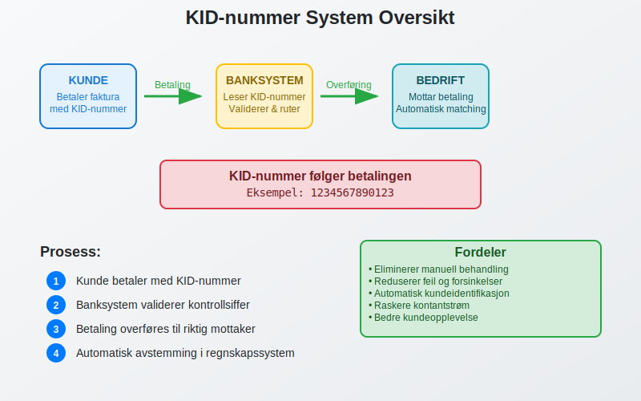
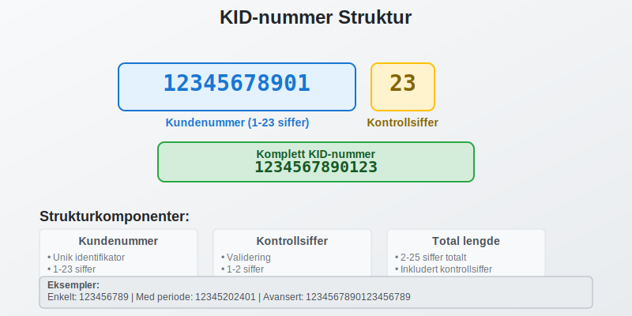
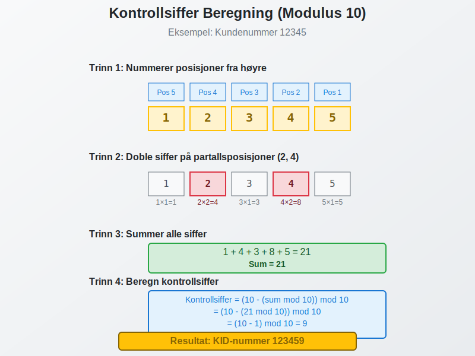
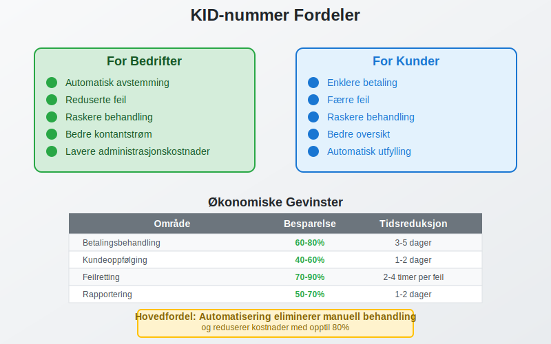
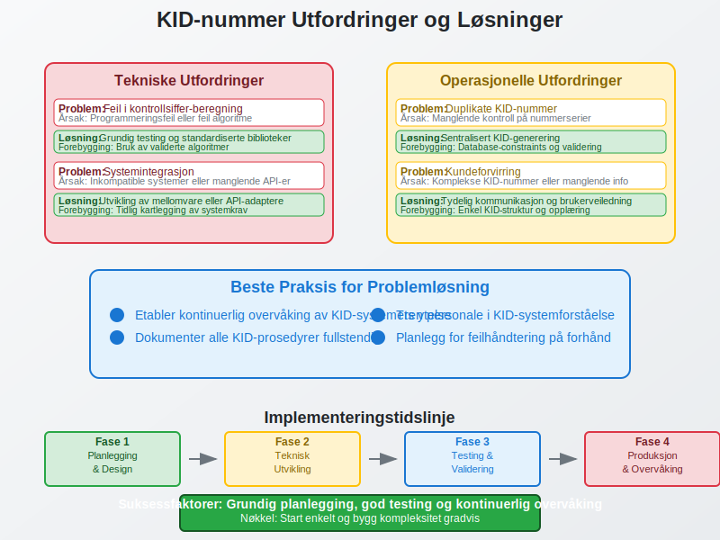

Et KID-nummer (Kunde-IDentifikasjon) er et unikt referansenummer som brukes i norsk betalingsformidling for å automatisk identifisere og knytte innbetalinger til riktig kunde eller faktura. Dette systemet er fundamentalt for effektiv avstemming og automatisering av betalingsprosesser i norske bedrifter.
KID-nummer er spesielt viktig for bedrifter som håndterer mange kundebetalinger, da det eliminerer behovet for manuell identifikasjon av innbetalinger og reduserer risikoen for feil i kundeoppfølging. Systemet integreres sømløst med moderne ERP-systemer for automatisk bokføring og kundeadministrasjon.

Seksjon 1: Hvordan KID-nummer Fungerer
KID-nummer fungerer som en digital “adresselapp” som følger betalingen gjennom hele det norske betalingssystemet. Når en kunde betaler en faktura med KID-nummer, blir referansen automatisk overført til mottakers bank sammen med betalingsinformasjonen.
Teknisk Funksjonalitet
KID-systemet bygger på følgende prinsipper:
- Automatisk gjenkjenning: Banksystemet leser KID-nummeret og kobler det til riktig mottakerkonto
- Kontrollsiffer-validering: Innebygd feilkontroll sikrer at nummeret er korrekt
- Standardisert format: Følger norske og internasjonale standarder for betalingsreferanser
- Systemintegrasjon: Kobles direkte til regnskaps- og faktureringssystemer
Denne automatiseringen er særlig verdifull for bedrifter som bruker elektronisk fakturering og eFaktura, hvor KID-nummeret automatisk følger med betalingsinformasjonen.
Seksjon 2: Struktur og Oppbygging av KID-nummer
Et KID-nummer består av flere komponenter som hver har sin spesifikke funksjon. Forståelse av denne strukturen er viktig for korrekt implementering og bruk.

Grunnleggende Komponenter
| Komponent | Beskrivelse | Lengde | Eksempel |
|---|---|---|---|
| Kundenummer | Unik identifikator for kunden | 1-23 siffer | 12345 |
| Kontrollsiffer | Beregnet siffer for validering | 1-2 siffer | 67 |
| Totallengde | Komplett KID-nummer | 2-25 siffer | 1234567 |
Detaljert Strukturanalyse
Kundenummer-delen kan inneholde:
- Ren kundeidentifikator
- Kombinasjon av kunde- og fakturanummer
- Periodekoder for abonnementstjenester
- Avdelings- eller produktkoder
Kontrollsiffer-delen beregnes ved hjelp av:
- Modulus 10-algoritme (vanligst)
- Modulus 11-algoritme (for spesielle tilfeller)
- Dobbel kontrollsiffer-validering for ekstra sikkerhet
Seksjon 3: Ulike Typer KID-nummer
Det finnes flere varianter av KID-nummer tilpasset ulike forretningsbehov og betalingsscenarier. Valg av type avhenger av bedriftens størrelse, kundebase og betalingsvolum.
3.1 Standard KID-nummer
Dette er den vanligste formen og brukes for enkle kunde-til-bedrift betalinger:
- Lengde: 2-25 siffer
- Kontrollsiffer: Modulus 10 eller 11
- Bruksområde: Fakturabetalinger, medlemskontingenter, abonnementer
Eksempel: Kunde 12345 med kontrollsiffer 67 = KID-nummer 1234567
3.2 Blankett-KID
Brukes når samme KID-nummer skal kunne motta betalinger fra flere kilder:
- Fleksibel beløpsregistrering: Kan motta ulike beløp på samme referanse
- Periodisk rapportering: Egnet for donasjoner, innsamlinger, medlemskap
- Forenklet administrasjon: Reduserer antall unike referanser
3.3 Strukturert KID med Periodekoder
For bedrifter med regelmessige betalinger som abonnementer eller leie:
| Posisjon | Innhold | Eksempel |
|---|---|---|
| 1-5 | Kundenummer | 12345 |
| 6-9 | Periodekode (ÅRMM) | 2024 |
| 10-11 | Kontrollsiffer | 89 |
Komplett eksempel: 123452024089
3.4 Avansert KID med Produktkoder
For komplekse bedrifter med flere produktlinjer eller avdelinger:
- Avdelingskoder: Identifiserer hvilken del av bedriften som skal motta betalingen
- Produktkategorier: Skiller mellom ulike tjenester eller varer
- Geografiske koder: For bedrifter med flere lokasjoner
Seksjon 4: Beregning av Kontrollsiffer
Kontrollsifferet er en kritisk komponent som sikrer at KID-nummeret er korrekt og reduserer risikoen for feilregistrering av betalinger. Det finnes to hovedmetoder for beregning.

Modulus 10-metoden (Luhn-algoritme)
Dette er den mest brukte metoden for KID-nummer:
Trinn-for-trinn beregning:
- Start fra høyre: Nummerer posisjonene fra høyre mot venstre
- Doble annenhvert siffer: Siffer på partallsposisjoner dobles
- Reduser tosifrede resultater: Hvis dobling gir tosifret tall, summer sifrene
- Summer alle siffer: Legg sammen alle sifrene
- Beregn kontrollsiffer: (10 - (sum mod 10)) mod 10
Eksempel med kundenummer 12345:
| Posisjon | 5 | 4 | 3 | 2 | 1 |
|---|---|---|---|---|---|
| Siffer | 1 | 2 | 3 | 4 | 5 |
| Dobling | 1 | 4 | 3 | 8 | 5 |
| Sum | 21 | ||||
| Kontrollsiffer | (10 - (21 mod 10)) mod 10 = 9 |
Resultat: KID-nummer 123459
Modulus 11-metoden
Brukes for spesielle tilfeller hvor ekstra validering er nødvendig:
Vektfaktorer: 2, 3, 4, 5, 6, 7, 2, 3, 4, 5, 6, 7… (gjentas)
Beregningsprosess:
- Multipliser hvert siffer med tilhørende vektfaktor
- Summer alle produktene
- Beregn rest ved deling på 11
- Kontrollsiffer = 11 - rest (hvis rest = 0 eller 1, bruk spesialregler)
Seksjon 5: Praktisk Implementering og Bruk
Implementering av KID-nummer krever nøye planlegging og koordinering mellom ulike systemer. Moderne bedrifter integrerer KID-systemet med sine ERP-systemer for sømløs automatisering.
Systemintegrasjon
Nødvendige komponenter:
- Faktureringssystem: Genererer KID-nummer automatisk ved fakturering
- Banksystem: Mottar og behandler betalinger med KID-referanse
- Regnskapssystem: Automatisk bokføring basert på KID-matching
- Kundesystem: Oppdaterer kundekontoer automatisk
Implementeringsprosess
Fase 1: Planlegging og Design
- Definere KID-struktur basert på forretningsbehov
- Velge kontrollsiffer-metode
- Planlegge systemintegrasjon
Fase 2: Teknisk Utvikling
- Programmere KID-generering i faktureringssystem
- Implementere validering og kontrollsiffer-beregning
- Etablere kommunikasjon med banksystemer
Fase 3: Testing og Validering
- Teste KID-generering med ulike scenarier
- Validere kontrollsiffer-beregning
- Teste ende-til-ende betalingsflyt
Fase 4: Produksjonssetting
- Gradvis utrulling til kundebase
- Overvåking av betalingsflyt
- Finjustering basert på erfaringer
Seksjon 6: Fordeler og Gevinster
Implementering av KID-nummer gir betydelige fordeler for både bedrifter og kunder. Disse gevinstene blir særlig tydelige for bedrifter med høyt betalingsvolum.

Operasjonelle Fordeler
For Bedrifter:
- Automatisk avstemming: Eliminerer manuell matching av betalinger
- Reduserte feil: Kontrollsiffer-validering minimerer feilregistreringer
- Raskere behandling: Betalinger behandles automatisk uten menneskelig inngripen
- Bedre kontantstrøm: Raskere identifikasjon og registrering av innbetalinger
- Lavere administrasjonskostnader: Mindre behov for manuell oppfølging
For Kunder:
- Enklere betaling: Automatisk utfylling av betalingsinformasjon
- Færre feil: Redusert risiko for feilbetaling
- Raskere behandling: Betalinger registreres umiddelbart
- Bedre oversikt: Tydelig kobling mellom betaling og faktura
Økonomiske Gevinster
Studier viser at bedrifter som implementerer KID-system kan oppnå:
| Gevinstområde | Besparelse | Tidsreduksjon |
|---|---|---|
| Betalingsbehandling | 60-80% | 3-5 dager |
| Kundeoppfølging | 40-60% | 1-2 dager |
| Feilretting | 70-90% | 2-4 timer per feil |
| Rapportering | 50-70% | 1-2 dager |
Seksjon 7: KID-nummer og Digitale Betalingsløsninger
KID-nummer integreres sømløst med moderne digitale betalingsløsninger og er en grunnleggende komponent i Norges digitale betalingsinfrastruktur.
Integrasjon med eFaktura
eFaktura og KID-nummer utgjør en kraftig kombinasjon:
- Automatisk betalingsinformasjon: KID-nummer følger automatisk med eFaktura
- Direkte betaling: Kunder kan betale direkte fra nettbanken
- Umiddelbar registrering: Betalinger registreres øyeblikkelig hos mottaker
AvtaleGiro og KID
AvtaleGiro bruker KID-nummer for automatisk identifikasjon:
- Regelmessige betalinger: Samme KID kan brukes for gjentakende betalinger
- Varierende beløp: KID-nummer kan håndtere ulike beløp per periode
- Automatisk oppdatering: Endringer i beløp oppdateres automatisk
Mobile Betalingsløsninger
Moderne mobile betalingsapper som Vipps integrerer KID-funksjonalitet:
- QR-kode betaling: KID-nummer kan kodes inn i QR-koder
- Automatisk registrering: Betalinger med KID registreres automatisk
- Sanntids-notifikasjon: Både betaler og mottaker får umiddelbar bekreftelse
Seksjon 8: Juridiske og Regulatoriske Aspekter
KID-nummer er regulert av norske myndigheter og må følge spesifikke standarder og krav. Dette sikrer interoperabilitet og sikkerhet i det norske betalingssystemet.
Regulatorisk Rammeverk
Finanstilsynet overvåker og regulerer bruken av KID-nummer som del av det norske betalingssystemet. Viktige reguleringer inkluderer:
- Standardisering: KID-nummer må følge ISO 20022-standarden
- Sikkerhetskrav: Krav til datasikkerhet og personvern
- Rapporteringsplikt: Bedrifter må rapportere om bruk av KID-systemer
Personvern og GDPR
Siden KID-nummer ofte inneholder kundeinformasjon, må bedrifter følge GDPR-krav:
- Databehandling: KID-nummer må behandles i henhold til personvernlovgivning
- Samtykke: Kunder må informeres om bruk av KID-nummer
- Datalagring: Begrensninger på hvor lenge KID-data kan lagres
- Rett til sletting: Kunder har rett til å få slettet sine KID-data
Compliance og Revisjon
For bedrifter som bruker KID-nummer, er det viktig å etablere:
- Internkontroll: Rutiner for å sikre korrekt bruk av KID-system
- Dokumentasjon: Fullstendig dokumentasjon av KID-prosesser
- Revisjonsspor: Mulighet til å spore alle KID-relaterte transaksjoner
- Feilhåndtering: Prosedyrer for håndtering av feil i KID-systemet
Seksjon 9: Vanlige Utfordringer og Løsninger
Selv om KID-nummer er et robust system, kan bedrifter møte utfordringer ved implementering og drift. Her er de vanligste problemene og anbefalte løsninger.

Tekniske Utfordringer
Problem: Feil i kontrollsiffer-beregning
- Årsak: Programmeringsfeil eller feil forståelse av algoritme
- Løsning: Grundig testing og validering mot kjente eksempler
- Forebygging: Bruk av standardiserte biblioteker for KID-beregning
Problem: Systemintegrasjon
- Årsak: Inkompatible systemer eller manglende API-er
- Løsning: Utvikling av mellomvare eller API-adaptere
- Forebygging: Tidlig kartlegging av systemkrav og kompatibilitet
Operasjonelle Utfordringer
Problem: Duplikate KID-nummer
- Årsak: Manglende kontroll på nummerserier
- Løsning: Implementering av sentralisert KID-generering
- Forebygging: Database-constraints og validering
Problem: Kundeforvirring
- Årsak: Komplekse KID-nummer eller manglende informasjon
- Løsning: Tydelig kommunikasjon og brukerveiledning
- Forebygging: Enkel KID-struktur og god kundeopplæring
Beste Praksis for Problemløsning
- Etabler overvåking: Kontinuerlig overvåking av KID-systemets ytelse
- Dokumenter prosesser: Fullstendig dokumentasjon av alle KID-prosedyrer
- Tren personale: Sikre at alle relevante ansatte forstår KID-systemet
- Planlegg for feil: Ha klare prosedyrer for håndtering av KID-relaterte feil
Seksjon 10: Fremtiden for KID-nummer
KID-nummer fortsetter å utvikle seg i takt med digitalisering av det norske betalingssystemet. Nye teknologier og standarder vil påvirke hvordan KID-nummer brukes fremover.
Teknologiske Trender
Kunstig Intelligens og Maskinlæring:
- Automatisk optimalisering av KID-strukturer
- Prediktiv analyse for betalingsatferd
- Intelligent feildeteksjon og -korreksjon
Blockchain og Distribuerte Systemer:
- Økt sikkerhet og transparens i betalingsprosesser
- Redusert behov for mellommenn i betalingskjeden
- Nye muligheter for grensekryssende betalinger
Internet of Things (IoT):
- Automatiske betalinger fra tilkoblede enheter
- Sanntids-betalinger basert på forbruk
- Integrering med smarte kontrakter
Regulatoriske Endringer
Open Banking:
- Økt konkurranse og innovasjon i betalingsmarkedet
- Nye aktører og betalingsløsninger
- Behov for oppdaterte KID-standarder
Digitale Valutaer:
- Sentralbankens digitale valuta (CBDC)
- Påvirkning på tradisjonelle betalingssystemer
- Nye krav til betalingsreferanser
Anbefalinger for Bedrifter
For å forberede seg på fremtiden bør bedrifter:
- Investere i fleksible systemer: Velg løsninger som kan tilpasses nye krav
- Følge standardutvikling: Hold seg oppdatert på nye standarder og reguleringer
- Planlegge for endring: Ha en strategi for å håndtere teknologiske endringer
- Samarbeide med leverandører: Sikre at systemleverandører følger utviklingen
Konklusjon
KID-nummer er en fundamental komponent i det norske betalingssystemet som muliggjør effektiv, automatisert behandling av kundebetalinger. Systemet gir betydelige fordeler både for bedrifter og kunder gjennom reduserte kostnader, færre feil og raskere behandling.
For bedrifter som vurderer implementering av KID-nummer, er det viktig å:
- Planlegge grundig: Definere KID-struktur basert på forretningsbehov
- Investere i riktig teknologi: Velge systemer som støtter automatisering
- Fokusere på integrasjon: Sikre sømløs integrasjon med eksisterende systemer
- Prioritere opplæring: Sikre at personalet forstår systemet
Med riktig implementering og bruk kan KID-nummer være en kraftig driver for digitalisering og effektivisering av betalingsprosesser. Systemet vil fortsette å utvikle seg og tilpasse seg nye teknologier og krav, og bedrifter som investerer i KID-nummer i dag posisjonerer seg godt for fremtiden.
For mer informasjon om relaterte emner, se våre artikler om elektronisk fakturering, eFaktura, og avstemming.